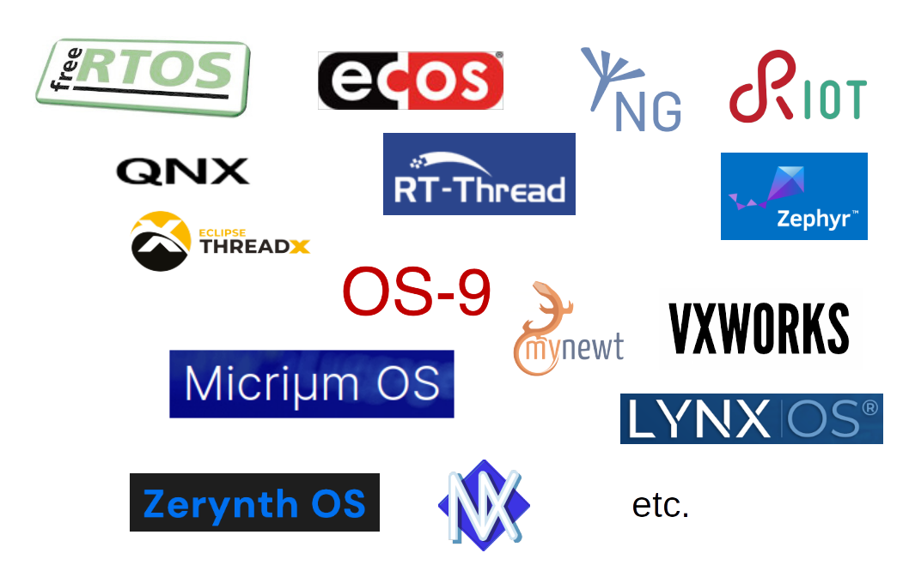
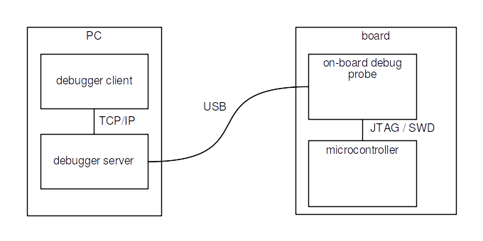

Execution environment: what the target board provides to run an application.
- Nowadays, an abstraction layer is provided by almost all
microcontroller manufacturers:
Real-Time Operating System (RTOS)
- Provides real help to run concurrent tasks, share data between tasks, etc.
- Allows for deterministic response time
- Uses very little memory
- No protection between tasks, nor between tasks and RTOS (no virtual memory)
- No way to modify the application without rebuilding and reflashing (well, not fully true)
Minimum required memory:
- RAM: a few KB
- Flash: a few KB
- Depends on the application

Sources:
FreeRTOS,
eCos,
Contiki-NG,
RIOT,
QNX,
RT-Thread,
Zephyr,
ThreadX,
Micriµm OS,
OS-9,
Mynewt,
VxWorks,
LynxOS,
Zerynth OS,
NuttX
- FreeRTOS acquired by Amazon - 2017
- ThreadX acquired by Microsoft - 2019, transferred to the Eclipse Foundation, as open source - 2023
- Google and Meta support Zephyr
Available services: will be seen farther.
Operating System (OS)
- Mainly: Linux
- Similar to a desktop computer environment:
- Package manager, to install new applications
- Graphical user interface is possible
Minimum required memory:
- RAM: a few MB or a few tens of MB
- Depends on applications
Usually:
- RAM: from 512 MB to 8 GB
- Flash card: from 1 GB to 8 GB
- Linux typically requires an MMU (Memory Management Unit) ⇒ virtual memory
- The kernel can be configured to work without one
- Thanks to μClinux project
- Beware about applications compatibility
Practice session 01
Build and run an Hello World application for the EFR32xG24 Dev Kit.
Execution environment: bare metal.
Reference documentation
- Microcontroller:
- Board:
- Sofware:
Development environments
Several possibilities:
- Simplicity Studio v5 (SSv5) - based upon Eclipse IDE
- VS Code + extension
- ...
We will use SSv5.
Practice session 01 - step 1
Debugging
Debugging: process of finding the root cause of a bug.
Always try to reduce time devoted to debugging. How to do this is not part
of this course, even if it contains some related information.
- Microcontroller controlled by the debug probe
- JTAG: an industry standard, initially developped for verifying printed circuit boards (PCB)
- SWD: an Arm standard, fully debug oriented
- Debug probe controlled by the debugger server
- Debugger client used to send commands: run, pause, step, set breakpoint, etc.
For most of the dev boards, a simple probe is part of the board:

Practice session 01 - step 2